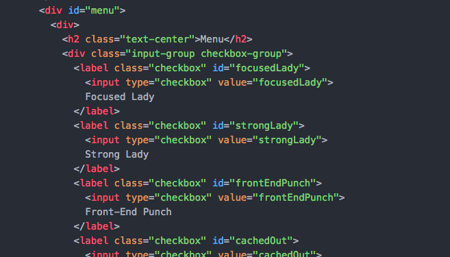

Part 3: Changing Colors with jQuery
Next we’ll practice another common interaction on web pages: changing HTML element styling triggered by an event. When the checkbox next to a drink is selected, make the background of the drink label change colors.
First, capture the event. Noticing a pattern? Capture the event, add an action.
Look in the index.html file to find the check box elements.

Select the input element with a type attribute of checkbox.
This time we’ll need to utilize attribute selectors because we only want to select the input elements of type "checkbox". Attribute selectors look like
element[“attribute=value”].To read up on attribute selectors check out: bit.ly/AttrSel
Don’t know what an attribute is? Check this out: http://bit.ly/Attribs
Watch your quotes here. You may need to switch a set of double quotes (") to single quotes (') to make sure the string isn't interpreted incorrectly.
Add the click event handler.
For a documentation on using the click event handler navigate to: bit.ly/CnCClick
Add the action:
Inside of the click event handler parentheses, add the function.
This time, we need to select the input’s parent element: the label.
Because we only want the current element's styling to change instead of every checkbox element, first select
thisinstead ofinput[type="checkbox"].For information on what
thisrefers to, read bit.ly/jQueryThis.How do we reference a parent element? Read up at bit.ly/CnCparent.
- We only want the color to show when the box is checked. There are a few ways to do this. Since we want to both add and remove the styling change, we’re just going to toggle the CSS styling class using the jQuery method
toggleClass().
For more information on the
toggleClass()method go to: bit.ly/ToggleC.There is already a CSS
highlightclass created for you to toggle. You'll find the class styling in the assets/styles/main.css file.Save your my-scripts.js file.
In Google Chrome, refresh your page, show the menu and select a drink. The background of the selected drink should now turn green!
Way to go rockstar!